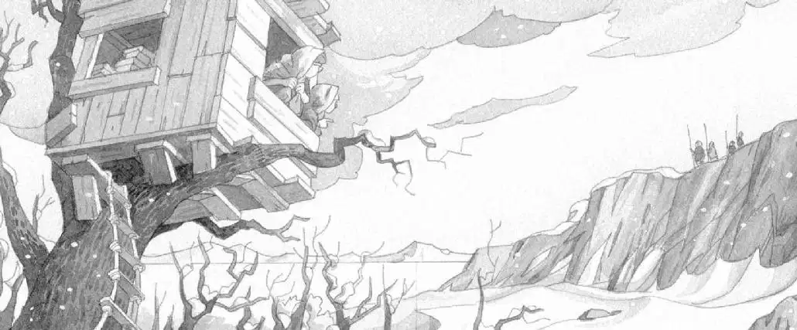

Jack, Annie, and Peanut looked outside.
Snow was falling from a gray sky.
The tree house was in the tallest tree in a grove of tall, bare trees.
The grove was on a wide, white plain. Beyond the plain were high, rocky cliffs.
“I’m c-cold,” said Annie. Her teeth chattered. She wrapped her towel tightly around her.
Sq-squeak. Peanut sounded cold, too.
“Poor mouse,” said Annie. “I’ll put you into Jack’s pack. You’ll be warmer there.”
Annie slipped Peanut into the pocket of the backpack.
“We have to go home,” said Jack. “We need warmer clothes.”
“We can’t go home,” said Annie. “We can’t find the Pennsylvania book. Not until our mission is complete. Remember? That’s the way the magic works.”
“Oh…right,” said Jack. He looked around. There was no sign of the Pennsylvania book that always took them home.
Annie peered out the window again. “Where are we, anyway?” she asked.
“I’ll find out,” said Jack. He picked up the open book and read the title on the cover. “Life in the Ice Age.”

“Ice Age?” said Annie. “No wonder we’re cold.”
“We better find the third M thing soon,” said Jack. “Before we freeze to death.”
“Look,” whispered Annie, “people.” She pointed out the window.
Jack saw them, too: four figures on a cliff. Two big figures and two little ones—all holding long spears.
“Who are they?” said Annie.
“I’ll look in the book,” said Jack.
He found a picture of some people. He read the caption to Annie:
Early modern humans were called Cro-Magnons. During the late Ice Age in Europe, they sometimes lived in caves beneath cliffs.
“Why are they carrying spears?” said Annie.
Jack turned the page. He found another picture of the Cro-Magnons. He read aloud:
The Cro-Magnon family often hunted together. They covered deep pits with branches. Then they drove reindeer and mammoths into the traps.
“Oh, trapping the animals—that’s sad,” said Annie.
“No, it’s not,” said Jack. “They couldn’t live without hunting. They didn’t have supermarkets, you know.”
They watched the family disappear over the other side of the cliff.
“Come on, I’m freezing,” said Jack. “Let’s hurry and find the M thing while the Cro-Magnons are hunting.”
“But I want to meet them,” said Annie.
“Forget it,” said Jack. “They don’t have books that tell them about us. They’ll think we’re some enemy and hurl their spears.”
“Yikes,” said Annie.
Jack put his book away.
Squeak. Peanut peeked out of the backpack.
“Stay in there,” said Annie.
Jack pulled on his pack and started down the rope ladder.
Annie followed.
On the icy ground, they huddled together.
The wind was biting. Jack put his towel over his head. Snow blew against his glasses.
“Hey, Jack,” said Annie. “Look at me.”
Annie had put on her swimming goggles. “Now I can see,” she said.
“Good thinking,” said Jack. “Now cover your head with your towel. Most of your body heat is lost through your head.”
Annie wrapped her towel around her head.
“We should find a cave or someplace warmer,” said Jack.
“I bet there are caves in those cliffs,” said Annie.
She and Jack started across the white plain. The snow wasn’t deep yet. But the wind was blowing hard.
“I told you!” Annie pointed to an opening in the rocks—a cave.
They ran to it.
“Careful,” said Jack. They stepped carefully into the shadowy cave.
It was only slightly warmer inside. But at least the wind wasn’t blowing.
In the gray light, they stamped the snow off their sneakers.
Annie took off her goggles.
“It smells in here,” said Jack.
“Yeah, like a wet dog,” said Annie.
“Let me see what I can find out,” said Jack.
He pulled out the Ice Age book.
“I’ll look around,” said Annie. “Maybe the M thing is here. Then we can go home and get warm.”
Jack stood by the entrance so he could read the book.
“This cave is filled with sticks,” Annie said.
“What?” said Jack. He didn’t look up from the book.
“No, wait. I think they’re bones,” said Annie.
“Bones?” echoed Jack.
“Yeah. Lots of them back here. All over the floor.”
Jack turned the pages of his book. He found a picture of a cave filled with bones.
“I hear something,” said Annie.
Jack read the writing below the picture of the cave. It said:
The great cave bears of the Ice Age were over eight feet tall. These bears were larger and fiercer than today’s grizzlies. Their caves were filled with the bones of their ancestors.
“Annie!” whispered Jack. “Get back here now!”
They were in the cave of a great cave bear!